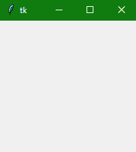
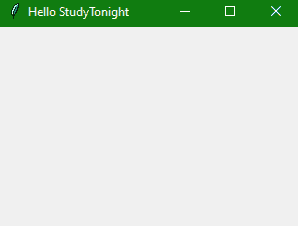

Tkinter 窗口
在本教程中，我们将学习 Python 中的 Tkinter 窗口，这是图形用户界面应用的主窗口，其他所有组件都在其中运行。我们已经介绍了基本的 Tkinter GUI 应用组件，其中我们解释了 Tkinter 窗口、小部件和框架是如何构成 Tkinter 应用的。
Tkinter Windows
Tkinter 窗口是 Tkinter 图形用户界面的基础元素。Tkinter 窗口是一个容器，所有其他图形用户界面元素(小部件)都位于其中。
以下是创建基本 Tkinter 窗口的语法:
win = Tk()
是的，我们使用 Tk()函数来创建我们的 Tkinter 应用窗口，其中添加了所有其他组件。
Tkinter 窗口示例:
这里有一个简单的例子，
from tkinter import *
win = Tk()
# run the app window
win.mainloop()

在上例中，mainloop()功能用于运行 GUI 应用。
Tkinter 自定义窗口
现在让我们来看一个基本的例子，我们将使用像标题和几何图形这样的属性来创建一个基本的图形用户界面应用。
这里我们有代码来演示在创建定制的 Tkinter 窗口时使用的步骤:
from tkinter import *
window = Tk()
# You can add your widgets here
window.title('Hello StudyTonight')
window.geometry("300x200+10+20")
window.mainloop()

下面是我们在代码中所做的工作:
第一步是导入代码中的 Tkinter 模块。
导入后，第二步是通过调用
Tk()函数设置应用对象。这将创建一个顶层窗口(根)，该窗口具有一个带有标题栏和控制框的框架，带有最小化和关闭按钮，以及一个客户端区域来保存其他小部件。之后，您可以在代码中添加您可能想要添加的小部件，如按钮、文本框、滚动条、标签等等。
window.title()功能用于向用户界面提供标题，如您在输出中所见。行内
window.geometry("300x200+10+20)；geometry()方法以同样的方式定义帧左上角的宽度、高度、和坐标(所有值一般以像素为单位)。以下是语法:py window.geometry("widthxheight+XPOS+YPOS")* 之后，应用对象通过调用mainloop()方法进入事件监听循环。这样，应用现在就在上不断地等待在其中的元素上生成的任何事件。可以有类似于在文本字段中输入的文本、从下拉菜单或单选按钮中进行的选择、鼠标的单/双击动作等事件。**应用的功能包括响应特定类型的事件执行适当的回调函数**。
一旦点击标题栏上的关闭按钮，事件循环将终止。
总结:
在本教程中，我们学习了如何创建一个 Tkinter 窗口来创建一个 GUI 应用。that 窗口包含构成应用的所有小部件。